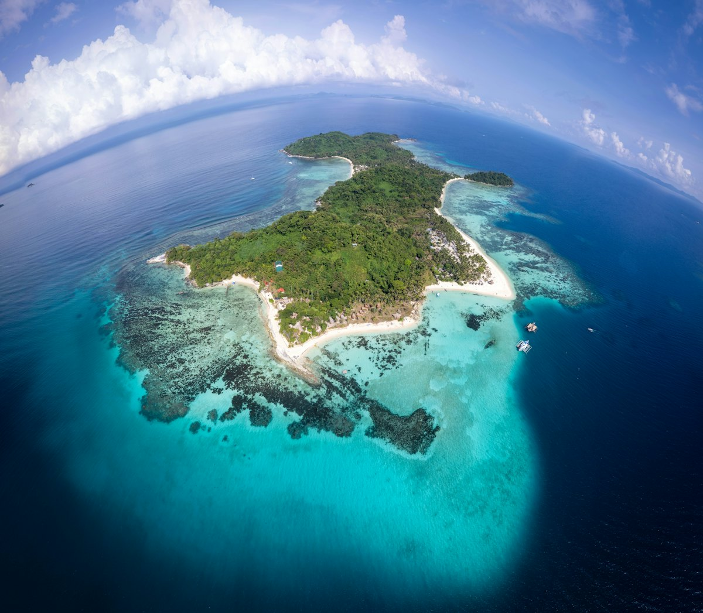
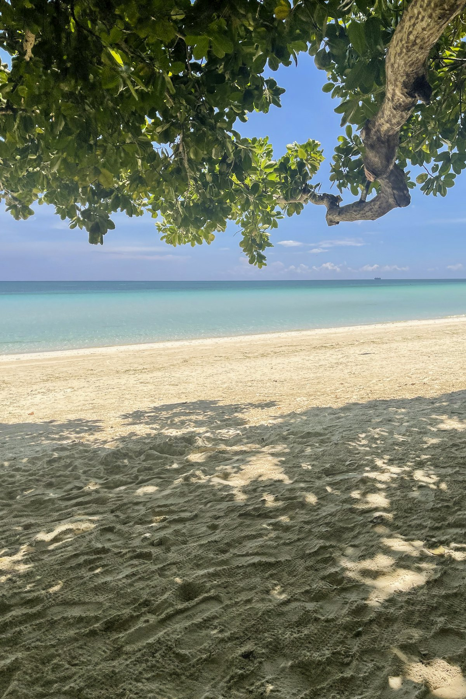
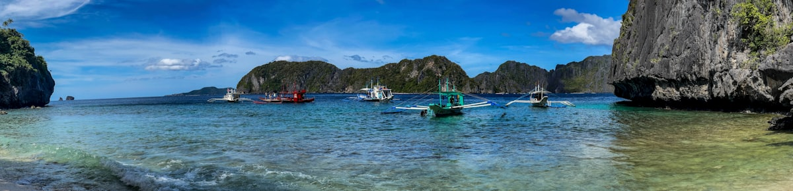
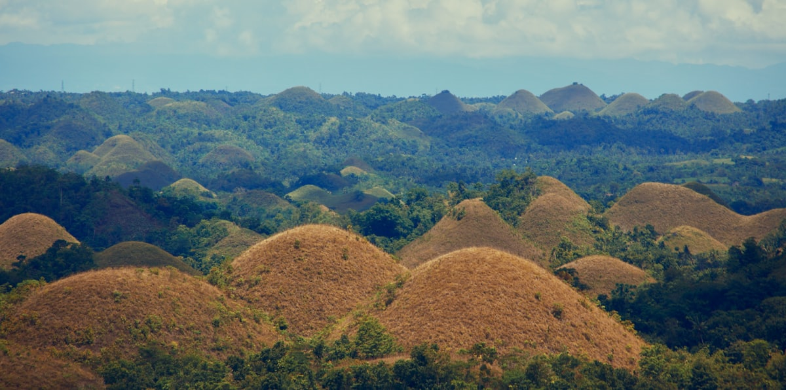
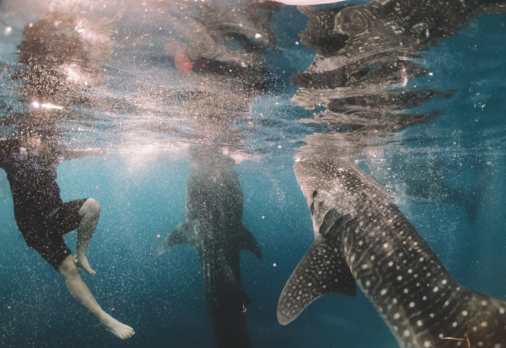
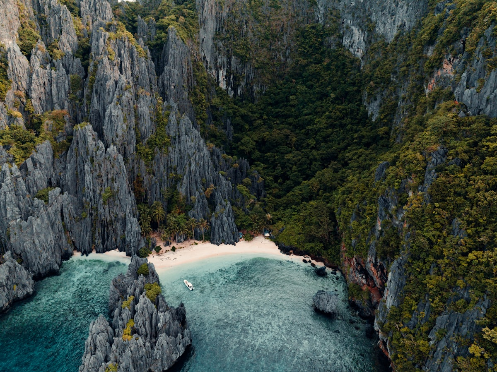
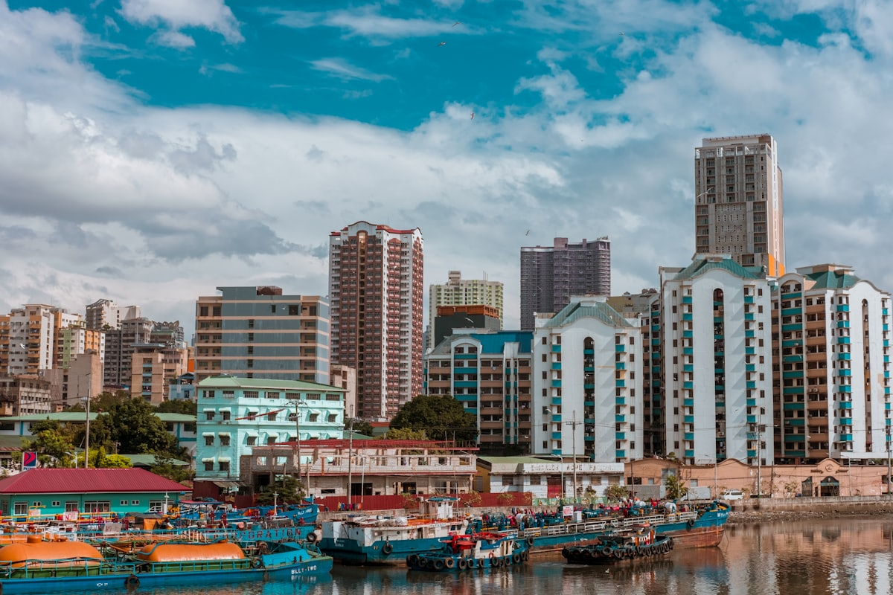
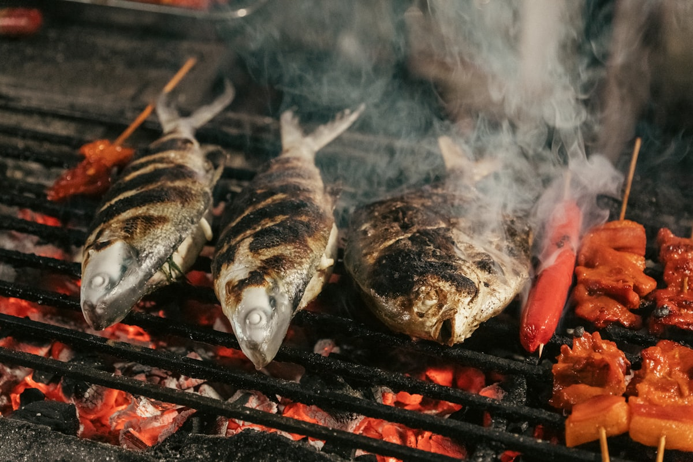

| 事项 | 结论 |
|---|---|
| 事项 | 结论 |
| 签证（最关键） | 2026-01 起中国普通护照赴菲免签 14 天（限马尼拉 NAIA / 宿务 MCIA 入境，旅游/商务目的）；15 天行程超上限，需办 9A 旅游签证（约 1–2 周出签，材料从简） |
| 推荐方案 | 马尼拉 2 天 + 长滩岛 4 天 + 宿务 4 天（含墨宝/薄荷）+ 巴拉望 4 天 |
| 返程约束 | 第 15 天爱妮岛/公主港经马尼拉转机返京；旺季（春节/寒假）提前 1 个月订 |
| 行程链 | 马尼拉 → 长滩岛 → 宿务 → 薄荷岛 → 公主港 → 爱妮岛 → 返程 |
| 预算（人均） | 经济 7000–10000 ／ 标准 12000–18000 ／ 舒适 25000–38000（人民币） |
| 三件提前事 | ① 确认免签资格/办 9A 签 ② 订 4 段国内航班（宿务太平洋/亚航） ③ 爱妮岛跳岛与地下河提前 2 周订 |
| 季节提醒 | 11 月–次年 5 月旱季最佳；6–10 月雨季台风多，海岛段航班易延误 |
| 支付与时差 | 时差 0 小时；220V A/B 型插座；比索现金为主 + 部分刷卡，1 元 ≈ 7.8 比索 |
以下为 15 天 14 晚的推荐节奏：马尼拉 2 天打底，长滩岛 4 天度假，宿务 4 天（含墨宝沙丁鱼+薄荷岛一日），巴拉望 4 天（地下河+爱妮岛跳岛）。每日主景点 ≤2 个，海岛段留足躺平时间。
| 日期 | 行程 | 过夜地 | 主题 |
|---|---|---|---|
| D1 抵马尼拉 | 北京✈马尼拉（直飞约 5h），入住马卡蒂/老城，傍晚罗哈斯大道看日落 | 马尼拉 | 抵达+预热 |
| D2 | 圣地亚哥堡 → 马尼拉大教堂 → 黎刹公园 → SM Mall of Asia | 马尼拉 | 殖民老城 |
| D3 飞长滩 | 马尼拉✈长滩（卡提克兰 MPH 或卡利博 KLO），车船进岛约 2.5–3h，入住白沙滩 | 长滩岛 | 进岛日 |
| D4 | 白沙滩漫步 → 海上降落伞/香蕉船 → 傍晚日落帆船 | 长滩岛 | 白沙滩日 |
| D5 | 水晶岛/魔幻岛跳岛浮潜 → 悬崖跳水 | 长滩岛 | 跳岛日 |
| D6 | 普卡海滩（贝壳沙滩）→ 卢霍山观景台 → D'Mall 夜市 | 长滩岛 | 环岛日 |
| D7 飞宿务 | 长滩✈宿务（直飞约 1h），入住市区，傍晚 SM 海滨散步 | 宿务 | 转场日 |
| D8 | 麦哲伦十字架 → 圣婴教堂 → 卡邦市场 → 山顶观景台 | 宿务 | 老城日 |
| D9 | 宿务→墨宝（包车/巴士约 3h），Panagsama 沙丁鱼风暴浮潜 | 墨宝 | 沙丁鱼日 |
| D10 | 薄荷岛一日（快船 2h）：巧克力山 → 眼镜猴 或 Oslob 鲸鲨 | 宿务 | 薄荷/鲸鲨 |
| D11 飞巴拉望 | 宿务✈公主港（直飞约 1h20m），下午本田湾跳岛（可选） | 公主港 | 进岛日 |
| D12 | 沙邦地下河一日（UNESCO 世界遗产溶洞船游） | 公主港 | 地下河日 |
| D13 | 公主港→爱妮岛（车程 5–6h 或小飞机），傍晚爱妮岛镇 | 爱妮岛 | 转场日 |
| D14 | 爱妮岛跳岛 Tour A：大潟湖 → 小潟湖/秘密潟湖 → Simizu 岛 → 七勇士海滩 | 爱妮岛 | 跳岛日 |
| D15 返程 | 爱妮岛✈马尼拉→北京（约 5h），或公主港回马尼拉转机返京 | — | 收尾 |
以下为 15 天全程的逐小时执行时间线，可当作「当天打开照着走」的清单。标注 ※ 的可选项视体力与天气取舍。
| 时间 | 事项 |
|---|---|
| 14:00–20:30 | 北京✈马尼拉（直飞约 5h）。国航/菲律宾航空均有航班，抵达 NAIA 机场 1/2/3 航站楼，先换少量比索、买电话卡（Globe/Smart） |
| 20:30–22:00 | Grab 打车到马卡蒂或王城区附近入住（约 40 分钟，避开高峰），酒店周边便利店补给 |
| 22:00–23:00 | 罗哈斯大道（Roxas Blvd）海滨散步，看马尼拉湾夜色，宵夜菲律宾烧烤 |
| 23:00 | 回酒店休息，倒时差（时差 0h，基本无感） |
| 时间 | 事项 |
|---|---|
| 08:30–11:00 | 圣地亚哥堡（Fort Santiago，约 75 比索）：西班牙殖民要塞，民族英雄黎刹被囚禁之地，城墙与花园很出片 |
| 11:00–12:30 | 马尼拉大教堂（免费）+ 圣奥古斯丁教堂（世界遗产，约 200 比索）：王城区两大地标，欧式穹顶与石雕 |
| 12:30–14:00 | 午餐：王城区内菲律宾菜（Adobo 炖肉、Sisig、Halo-halo 冰品） |
| 14:30–16:30 | 黎刹公园（免费）：菲律宾国父纪念公园，日落前常有人放风筝 |
| 17:00–19:00 | SM Mall of Asia（免费）：亚洲最大商场之一，马尼拉湾落日+商场美食街 |
| 时间 | 事项 |
|---|---|
| 07:00–09:00 | 马尼拉✈长滩：优先选降卡提克兰（MPH）（近，约 40 分钟车船）；卡利博（KLO）较便宜但需 2.5–3h 大巴+快艇 |
| 09:30–12:00 | 卡提克兰码头→长滩岛 Cagban 码头快艇（约 10–15 分钟），登岛交环境税+码头税（约 150+100 比索） |
| 12:00–13:30 | 乘三轮车/酒店接驳到白沙滩 S2/S3 区域（约 20 分钟），入住放行李 |
| 14:00–18:00 | 白沙滩（免费）：S1–S3 沙滩漫步，踩水游泳；S3 海水最平缓、浮潜点多 |
| 18:00–20:00 | D'Mall 晚餐（Halo-halo、海鲜烧烤），白沙滩第一晚看灯光与夜市 |
| 时间 | 事项 |
|---|---|
| 08:30–10:30 | 白沙滩晨泳与拍照：上午人少水清，沙质如面粉（S1 最细） |
| 10:30–12:30 | 水上活动：香蕉船（约 250–350 比索）、海上降落伞（约 1500–2500 比索）、摩托艇，现场讲价 |
| 12:30–14:00 | 午餐：白沙滩路侧餐厅（烤鸡 Inasal、海鲜意面），人均 300–600 比索 |
| 15:00–17:30 | 下午 S2–S3 浮潜（免费）：小丑鱼、海星珊瑚；或预约落日帆船 |
| 17:30–19:00 | 日落帆船（约 800–1200 比索/人，2 人可拼）：长滩经典日落体验，帆船看火烧云 |
| 时间 | 事项 |
|---|---|
| 08:30–09:00 | 码头集合，报水晶岛/魔幻岛跳岛拼船（约 1200–1800 比索/人，含午餐） |
| 09:30–11:30 | 水晶岛（Crystal Cove）：两个洞穴+玻璃海浮潜，岸边海星很多 |
| 11:30–12:30 | 魔幻岛（Magic Island）：悬崖跳水 3–8 米可选，跳台安全绳 |
| 12:30–13:30 | 船上午餐（烤鱼+米饭+水果），海水午餐是跳岛标配 |
| 13:30–16:00 | 鳄鱼岛（Crocodile Island）浮潜：珊瑚礁与热带鱼群，返程回港 |
| 16:30–19:00 | 回白沙滩，S3 周边吃海鲜烧烤，看日落收尾 |
| 时间 | 事项 |
|---|---|
| 08:30–09:00 | 租摩托（约 400–500 比索/天，需驾照）或包三轮车环岛 |
| 09:30–11:30 | 普卡海滩（Puka Shell Beach，免费）：北岸贝壳沙滩，人少浪清，长滩最美野滩 |
| 11:30–13:00 | 北岸午餐：海鲜烧烤或椰汁鸡肉，人均 300–500 比索 |
| 13:30–15:30 | 卢霍山（Mt. Luho，观景台约 200 比索）：长滩最高点，俯瞰全岛+白沙滩全景 |
| 16:00–19:00 | 回白沙滩：D'Mall 逛街、做菲律宾按摩（约 400–600 比索/小时） |
| 19:00 | 长滩最后一晚：海鲜市场自选海鲜代加工（Coral View/Seafood market） |
| 时间 | 事项 |
|---|---|
| 09:00–11:00 | 长滩✈宿务（直飞约 1h，宿务太平洋/菲航都有），麦克坦机场 Mactan 入境 |
| 11:30–13:00 | Grab 到宿务市区（约 30–40 分钟），入住 IT Park / Ayala 商圈附近 |
| 13:00–14:00 | 午餐：宿务名物 Lechon 烤乳猪（Zubuchon / CNT 是本地连锁） |
| 15:00–17:30 | 圣佩德罗堡（Fort San Pedro，约 30 比索）+ 海滨步道：菲律宾最古老要塞之一 |
| 17:30–19:00 | SM City Cebu / Ayala Center 逛吃，补充防晒与浮潜装备 |
| 时间 | 事项 |
|---|---|
| 08:30–10:00 | 麦哲伦十字架（Magellan's Cross，免费）：1521 年麦哲伦登陆宿务竖立的十字架，彩色屋顶亭很上镜 |
| 10:00–11:30 | 圣婴教堂（Basilica del Sto. Niño，免费）：菲律宾最古老教堂，圣婴像+礼拜堂，游客多但很神圣 |
| 11:30–13:00 | 午餐：卡邦市场附近小吃或菲律宾快餐（Jollibee 是国粹级体验） |
| 13:30–15:30 | 卡邦市场（Carbon Market）：宿务最大菜市场，水果（芒果/榴莲）、干货、手信扫货 |
| 16:00–18:00 | 宿务山顶观景台（Tops Lookout）：俯瞰宿务海峡日落，回程夜景 |
| 时间 | 事项 |
|---|---|
| 07:00–10:00 | 宿务包车/拼车去墨宝（Moalboal，约 3h）；或 South Bus 巴士（约 250–350 比索） |
| 10:30–12:30 | Panagsama 海滩沙丁鱼风暴（浮潜约 500–1000 比索/人含装备）：离岸 30 米就是千万条沙丁鱼，震撼 |
| 12:30–14:00 | 午餐：墨宝海边餐厅（烤鱼+海鲜汤），人均 400–600 比索 |
| 14:00–16:00 | 可选：沙丁鱼水肺体验潜（约 2500–3500 比索）或白沙滩（White Beach）浮潜看海龟 |
| 16:00–19:00 | 返程回宿务市区，晚餐海鲜市场或 IT Park 夜市 |
| 时间 | 事项 |
|---|---|
| 06:30–08:30 | 宿务 1 号码头乘快船到薄荷岛塔比拉兰（约 2h，单程 800–1000 比索） |
| 09:00–11:30 | 巧克力山（Chocolate Hills，观景台约 50–100 比索）：1268 座圆顶山丘，旱季呈巧克力色，薄荷名片 |
| 11:30–13:00 | 午餐：薄荷岛农家菜（炸鸡+海鲜）或眼镜猴保护区附近餐厅 |
| 13:00–14:30 | 眼镜猴保护区（约 60–100 比索）：巴掌大的夜行灵长类，萌翻全场 |
| 14:30–17:00 | 返塔比拉兰码头，快船回宿务（末班约 17:00，注意留余量） |
| 18:30 | 宿务晚餐：想吃鲸鲨的可在宿务市区报Oslob 鲸鲨一日游（凌晨 4 点出发，约 1500–2500 比索） |
| 时间 | 事项 |
|---|---|
| 09:00–11:30 | 宿务✈公主港（直飞约 1h20m，宿务太平洋/菲航），公主港机场较小，出关快 |
| 12:00–13:30 | 入住公主港市区，午餐：Balinsasayaw 或海滨餐厅（招牌烤鸡+海鲜） |
| 14:30–17:30 | 可选：本田湾跳岛（Honda Bay，约 1200–1800 比索含船）浮潜 2–3 岛，或市区蝴蝶园/殖民建筑闲逛 |
| 18:00–20:00 | 公主港 Baywalk 海滨夜市：烤海鲜+椰汁，看日落与本地生活 |
| 时间 | 事项 |
|---|---|
| 07:30–09:30 | 公主港出发去沙邦（Sabang，车程约 2h），可拼团或包车（含门票船票约 1500–2500 比索/人） |
| 10:00–12:00 | 公主港地下河（Puerto Princesa Underground River）：乘蟹船入洞，8km 地下河穿石灰岩，钟乳石+蝙蝠，世界新七大自然奇观 |
| 12:00–13:30 | 沙邦海滩午餐，白沙滩+椰林放松 |
| 13:30–15:00 | 可选：沙邦红树林（Mangrove Paddleboat，约 400–600 比索）或直接返程 |
| 15:00–17:00 | 回公主港市区，晚餐菲律宾烧烤+椰子布丁 |
| 时间 | 事项 |
|---|---|
| 08:00–10:00 | 公主港出发：包车/拼车北上爱妮岛（约 5–6h，包车 2500–4000 比索/车，拼车 800–1200 比索/人） |
| 10:00–13:00 | 沿途可在奎松（Quezon）或泰泰（Taytay）休息，吃烤物水果，山路风景极佳 |
| 14:00–15:30 | 抵达爱妮岛镇（El Nido），入住镇上或 Corong-Corong 海滩区 |
| 16:00–18:00 | 爱妮岛镇海滩（免费）：碧绿海水+石灰岩背景，日落时分超美 |
| 18:00–20:00 | 镇上海鲜晚餐，提前订明日跳岛 Tour A（旺季当天订不到） |
| 时间 | 事项 |
|---|---|
| 08:00–08:30 | 码头集合：Tour A 拼船（约 1200–1800 比索/人，含午餐、向导，另付生态费约 200 比索） |
| 09:00–10:30 | 大潟湖（Big Lagoon）：被石灰岩壁环抱的碧玉色海水，划独木舟（约 200 比索/人）进入最震撼 |
| 10:30–11:30 | 小潟湖/秘密潟湖：游过岩缝进入隐秘水湾，碧蓝见底 |
| 11:30–12:30 | 船上午餐：烤鱼+米饭+水果，海水沙滩上用餐 |
| 12:30–15:00 | Simizu 岛浮潜 + 七勇士海滩（Seven Commandos）：白沙椰林、珊瑚鱼群，最后一站发呆 |
| 15:30–17:00 | 返爱妮岛镇，海鲜市场买海胆/龙虾代加工（旺季提前去） |
| 时间 | 事项 |
|---|---|
| 07:00–09:00 | 爱妮岛经公主港或直接小飞机转马尼拉（AirSWIFT 飞马尼拉约 1.5h，班次少要提前订） |
| 09:30–12:30 | 马尼拉 NAIA 机场出境（建议提前 3 小时到，机场人多），免税店扫芒果干、椰子油 |
| 12:30–18:00 | 马尼拉✈北京（直飞约 5h），航班常为下午/傍晚，到家休息 |
| 18:30 | 结束 15 天千岛之旅 |
必去（必去）/ 顺路（顺路）/ 可跳过（可跳过）。

必去
必去
必去
必去
必去
必去
顺路图片为 Unsplash 主题图（长滩岛白沙滩、爱妮岛潟湖、薄荷岛巧克力山、沙丁鱼风暴、地下河、马尼拉等均为菲律宾实景），用于页面配图。更多免费景点：马尼拉黎刹公园、宿务麦哲伦十字架、爱妮岛镇海滩、本田湾、普卡海滩。
点击左侧节点可在地图上定位；点击地图 marker 会高亮对应节点。坐标为 WGS-84 转 GCJ-02 纠偏后标注。
以下为单人、不含购物的估算，人民币计价；出发地基准北京。汇率按 1 元 ≈ 7.8 菲律宾比索估算。往返国际机票按淡季 2500–4500 元计，国内 4 段按廉航含托运行李估算。
| 项目 | 经济（7000–10000） | 标准（12000–18000） | 舒适（25000–38000） |
|---|---|---|---|
| 往返机票 | 北京⇄马尼拉 2500–3500 | 直飞+灵活时段 3500–5000 | 含国内段联运 8000–12000 |
| 住宿（14 晚） | 青旅/民宿 120–180/晚 | 度假村/海景 400–800/晚 | 五星海岛度假村 1500–3000/晚 |
| 国内 4 段航班 | 宿务太平洋特价 1500–2500 | 含托运行李 2500–4000 | 灵活时段+小飞机 5000–8000 |
| 餐饮+活动 | 跳岛/浮潜基础 2500–3500 | 含薄荷一日/鲸鲨 4500–6500 | 包船+潜水课程 12000–18000 |
带娃推荐：长滩岛为主（浅滩安全），薄荷岛巧克力山+眼镜猴（动物友好），砍掉悬崖跳水、地下河（洞内黑暗潮湿）；宿务报 Oslob 鲸鲨或本田湾跳岛（船稳、鱼多）。长滩岛 S3 水质最平缓，适合孩子玩水。
持证潜水员可把墨宝扩为 2 天（沙丁鱼+大断层 Pescador Island 深潜，体验潜约 2500–3500 比索/次），长滩缩到 3 天；时间再紧可跳过马尼拉直接飞宿务，入境口岸同样是 MCIA，享受免签政策。
| 方式 | 时长 | 参考价 | 备注 |
|---|---|---|---|
| 直飞（推荐） | 北京→马尼拉约 5h | 往返 2500–4500 元 | 国航/菲律宾航空，每日有班；返程多为下午 |
| 转机 | 7–12h | 2000–3500 元 | 经香港/上海/厦门/广州，便宜但费时 |
| 飞宿务（免签入口） | 约 6–8h（多为转机） | 3000–5000 元 | MCIA 入境同样享 14 天免签，适合直入海岛 |
| 区域 | 价格/晚 | 优点 | 短板 |
|---|---|---|---|
| 马尼拉·马卡蒂/老城 | 经济 150–250 / 标准 300–500 | 转机方便，夜生活多 | 老城区晚上较乱 |
| 长滩岛·白沙滩 S2/S3 | 经济 200–400 / 标准 500–900 | 出门即白沙滩，餐饮酒吧多 | 旺季贵，需提前订 |
| 宿务·IT Park/Ayala | 经济 150–250 / 标准 300–600 | 商圈安全，去机场近 | 景点需打车 |
| 墨宝·Panagsama | 经济 120–200 / 标准 250–450 | 离沙丁鱼潜点步行可达 | 设施简单，沙滩一般 |
| 公主港·市区 | 经济 150–250 / 标准 300–500 | 去沙邦/本田湾方便 | 城市面貌一般 |
| 爱妮岛·镇上/Corong | 经济 250–400 / 标准 500–1000 | 码头近，跳岛集合方便 | 旺季一房难求 |